Глава 13. Цепи с распределенными параметрами
13.1. Общие положения13.2. Уравнения передачи однородной линии
13.3. Падающие и отраженные волны
13.4. Вторичные параметры однородной линии
13.5. Входное сопротивление линии
13.6. Линия без потерь
13.7. Применение отрезков линий с пренебрежимо малыми потерями
Вопросы и задания для самопроверки
Глава 13. Цепи с распределенными параметрамий
13.1. Общие положения
До сих пор рассматривались R L С электрические цепи в предположении, что параметры сосредоточены в определенных элементах цепи: индуктивность сосредоточена в катушке (энергия магнитного поля катушки локализована в ее магнитопроводе), емкость сосредоточена в конденсаторе (энергия электрического поля локализована между обкладками конденсатора); резистивное сопротивление сосредоточено в резисторе (преобразование электрической энергии в резисторе в тепловую осуществляется в токопроводящем слое резистора). Такие цепи получили название цепей с сосредоточенными параметрами
Однако представление электрических цепей в виде цепей с сосредоточенными параметрами не всегда возможно. Например, рассматривая передачу электромагнитной энергии в линии связи, фидере, антенне, волноводе и т. д., следует учитывать, что магнитное и электрическое поля распределены по всей длине этих устройств и превращение электромагнитной энергии в тепло также происходит по всей длине устройств. В таких цепях приходится сталкиваться с распределенными по длине нндуктивностями, емкостями, резистивными сопротивлениями, поэтому они называются цепями с распределенными параметрами
Ток и напряжение на выходе сколь угодно малого участка (отрезка) цепи с распределенными параметрами не равны соответственно току и напряжению на его входе и отличаются как по величине, так и по фазе. Таким образом, ток и напряжение в любой точке цепи являются функциями не только времени t, но и пространственных координат (например, расстояния от одного из концов цепи).
Заметим, что деление цепей на два класса – с сосредоточенными и распределенными параметрами, достаточно условно. Одну и ту же цепь следует рассматривать как систему с сосредоточенными или распределенными параметрами в зависимости от частоты, на которой она работает. Действительно, если на входе цепи действует гармонический сигнал, то в силу конечной скорости распространения электромагнитных колебаний (близкой к скорости света) возмущение от источника за время, равное периоду колебания T, пройдет расстояние, равное длине волны электромагнитного колебания: l = cT= c/f, где с – скорость света; f – частота колебания.
При длине цепи, совпадающей с длиной волны колебания, изменение мгновенного значения напряжения в конце цепи запаздывает на целый период по сравнению с изменением мгновенного значения напряжения источника. В цепях, длина которых l > l, запаздывание может составлять большое число периодов. Следовательно, если длина цепи соизмерима или значительно превышает длину волны распространяющегося в ней электромагнитного колебания, то напряжение (ток) является функцией времени и расстояния от начала цепи. Цепь является системой с распределенными параметрами.
Если длина цепи намного меньше длины волны, то изменения напряжения в любой точке и в конце цепи происходят одновременно с изменением мгновенного значения напряжения источника. Никакого запаздывания в такой цепи нет: напряжение (ток) является только функцией времени. Эту цепь можно считать системой с сосредоточенными параметрами. Например, отрезок коаксиального кабеля длиной 30 см при передаче по нему телевизионных сигналов (с наивысшей частотой 8,5 мГц) может считаться цепью с сосредоточенными параметрами, поскольку l = c/fmax = 3×108/(8,5×106) = 35 м >> 0,3 м. Наоборот, в области дециметровых волн (l — десятки сантиметров) этот же отрезок кабеля должен рассматриваться как цепь с распределенными параметрами. Отрезок же коаксиального кабеля длиной, например, в 1 км является цепью с распределенными параметрами и для телевизионного сигнала.
В дальнейшем из обширного класса цепей с распределенными параметрами будем изучать так называемые длинные линии, предназначенные для передачи электромагнитной энергии на расстояние и имеющие длину, превышающую длину волны электромагнитных колебаний. К ним относятся двухпроводные воздушные линии связи, симметричные и коаксиальные кабельные линии проводных систем связи, фидеры, связывающие радиопередатчики с антеннами и т. д. При этом будем полагать, что конструктивные данные длинной линии (материал и диаметр ее проводов, их взаимное расположение) и ее параметры сохраняются неизменными по длине линии. Такие длинные линии называются однородными
Целью изучения однородных длинных линий является анализ распределений напряжений и токов вдоль линии. В основе анализа лежит представление о длинной линии как о цепи с бесконечно большим числом бесконечно малых по величине пассивных элементов, распределенных равномерно по ее длине.
13.2. Уравнения передачи однородной линии
Первичные параметры. Длинные линии могут иметь самую различную конструкцию. Так, двухпроводная воздушная линия (рис. 13.1, а) состоит из параллельных неизолированных проводов, укрепленных с помощью изоляторов на специальных опорах. Симметричная кабельная цепь представляет собой два изолированных скрученных друг с другом провода, образующих так называемую пару (рис. 13.1, б). Скрученные между собой пары (или четверки), заключенные в металлическую или пластмассовую защитную оболочку, образуют симметричный кабель.
Коаксиальная пара является основой коаксиального кабеля и состоит из внутреннего цилиндра – провода сплошного сечения, помещенного в полый цилиндр (рис. 13.1, в).
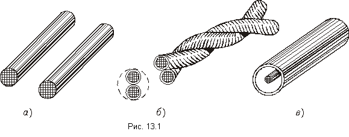
Сопротивление R – это сопротивление проводов линии единичной длины. Например, для двухпроводной линии сопротивление (Ом/км)
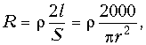
где r – удельное сопротивление материала проводов при температуре 20° С, Ом×мм2/м; l – длина линии, м; S – площадь поперечного сечения провода, мм2; r – радиус провода, мм.При температурах, отличных от 20° С, сопротивление проводов вычисляется по формуле
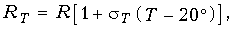
где sT – температурный коэффициент, 1/град; Т – температура, ° С. Так, сопротивление двухпроводной медной линии длиной 1 км (километрическое сопротивление) из проводов диаметром 4 мм при температуре Т= 20° С для частоты f = 0 составляет 2,84 Ом/км.Наличие поверхностного эффекта (вытеснение тока из внутренних слоев проводника на его поверхность при увеличении частоты) приводит к увеличению сопротивления R с ростом частоты (см. § 1.2).
Индуктивность L определяется отношением магнитного потока, сцепляющегося с контуром единичной длины, к току, вызывающему этот поток. Индуктивность линии складывается из внешней и внутренней индуктивностей. Первая определяется геометрическими размерами линии и не зависит от частоты; вторая зависит от материала проводов, их диаметра и частоты.
Поверхностный эффект уменьшает внутреннюю индуктивность при возрастании частоты. Например, километрическая индуктивность двухпроводной медной цепи (Гн/км)
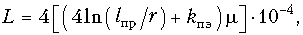
с диаметром проводов 2r = 4 мм и расстоянием между проводами lпр = 200 мм составляет на частоте f = 10 кГц (с учетом магнитной проводимости m = 1 и коэффициента действия поверхностного эффекта kпэ = 1,8) 1,89 мГн/км.Емкость С определяется отношением заряда, приходящегося на единицу длины линии, к напряжению между проводами линии.
Для двухпроводной линии емкость (Ф/км)
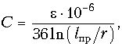
где e – диэлектрическая проницаемость вещества в пространстве между проводами. Например, километрическая емкость воздушной двухпроводной медной цепи (для воздуха e= 1) из проводов диаметром 2r = 4 мм и расстоянием между проводами lпр= 200мм составляет 7,4 нФ/км.Проводимость G обусловлена несовершенством изоляции и представляет собой активную составляющую проводимости изоляции между проводами, отнесенную к единице длины линии. Для воздушной линии проводимость изоляции зависит от климатических условий (влажности, температуры и др.), чистоты поверхностей изоляторов и т. д.
Проводимость изоляции возрастает с ростом частоты (особенно для кабельных цепей) за счет увеличения потерь в диэлектрике. Для воздушных цепей проводимость (См/км) G = G0 +kпf, где G0 – проводимость изоляции на постоянном токе; kп – коэффициент, учитывающий потери в диэлектрике при переменном токе; f –частота.
Для кабельных цепей G =G0 +wCtgd, где tgd – тангенс угла диэлектрических потерь
После введения первичных параметров можно уточнить понятие однородной длинной линии. Однородной называется такая линия, первичные параметры которой неизменны на всей ее длине.
Уравнения передачи однородной линии. Найдем распределения напряжения и тока в линии по ее длине и во времени.
Выделим элементарный участок линии длиной Dx, находящийся на расстоянии х от начала линии (рис. 13.2). Его эквивалентную схему можно приближенно представить в виде последовательно включенных сопротивления RDx и индуктивности LDx и параллельно включенных активной проводимости GDx и емкости СDх
Таким образом, линия рассматривается как цепь с бесконечно большим числом звеньев, электрические параметры которых бесконечно малы. При стремлении Dх к нулю точность такого представления возрастает.
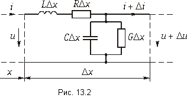
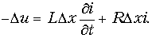
Здесь и далее используются частные производные, так как напряжение и ток являются функциями переменных t и х
Уменьшение тока на участке Dх происходит за счет ответвления тока через емкость СDх и проводимость изоляции GDx. Пренебрегая изменением напряжения как величиной второго порядка малости, можно написать
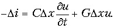
(13.1 б)Разделив обе части уравнений (13.1 а и б) на Dх и перейдя к пределу при Dх ® 0, получим дифференциальные уравнения линии:
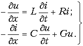
Эти уравнения называются телеграфными так как впервые были получены для линии телеграфной связи.
Будем считать, что в линии имеет место режим установившихся гармонических колебаний. Поскольку закон изменения напряжений и токов во времени известен, то из дифференциальных уравнений (13.2) остается найти лишь законы изменения амплитуд и фаз напряжений и токов с расстоянием х
Используя символический метод анализа гармонических колебаний, в котором
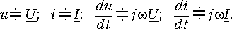
преобразуем уравнения (13.2) к виду
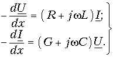
Так как комплексные действующие значения U и I являются функциями только х, уравнения записываются не в частных, а в полных производных.
Продифференцировав первое уравнение из (13.3) по х и подставив в него второе уравнение,получим
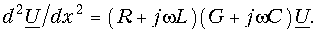
Введя обозначение
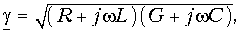
перепишем это уравнение в виде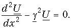
Корни характеристического уравнения p2–  2 =0 равны p1,2 = = ± . поэтому общее
решение дифференциального уравнения (13.5) для напряжения в точке х ищем в виде
2 =0 равны p1,2 = = ± . поэтому общее
решение дифференциального уравнения (13.5) для напряжения в точке х ищем в виде
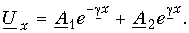
Из первого уравнения системы (13.3) имеем
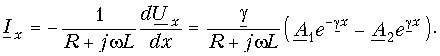
(13.6 б)Введя еще одно обозначение
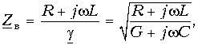
запишем решение для тока в точке х в форме
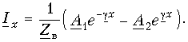
(13.7 б)Постоянные интегрирования A1 и A2 можно найти из начальных условий: при х = 0 Ux = U1 и Ix = I1, где U1 и I1 – напряжение и ток в начале линии. Тогда из (13.6 а и б) для х = 0:
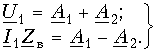
Откуда
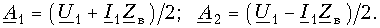
Подстановка полученных значений постоянных интегрирования в (13.6) дает следующие уравнения для определения напряжения Ux и тока Ix в произвольной точке х длинной линии
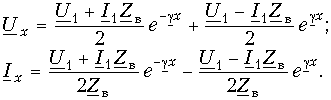
Это есть уравнения передачи однородной длинной линии* Параметры
 и Zв получили название коэффициента распространения
и волнового сопротивления линии. Их физический смысл будет рассмотрен позже.
и Zв получили название коэффициента распространения
и волнового сопротивления линии. Их физический смысл будет рассмотрен позже.
Если учесть, что
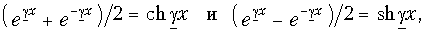
то уравнения передачи (13.8) можно переписать в более компактной форме:
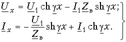
В конце линии x = l и Ux = U2 Ix = I2. Уравнения (13.9 а) примут вид
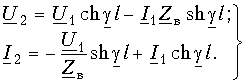
(13.9 б)Разрешая эту систему уравнений относительно напряжения U1 и тока I1 в начале линии, получаем
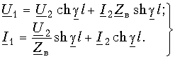
(13.9 в)Эти уравнения совпадают с известными нам уравнениями передачи
(12.35) для симметричного четырехполюсника при  l = Гс и Zв = Zс, что вполне понятно, так как линия связи представляет собой
симметричный четырехполюсник.
l = Гс и Zв = Zс, что вполне понятно, так как линия связи представляет собой
симметричный четырехполюсник.
13.3. Падающие и отраженные волны
Обозначим в уравнениях передачи (13.8) Uп = (U1 + I1Zв)/2 и U0 = (U1 – I1Zв)/2. С учетом этих обозначений запись уравнений передачи однородной длинной линии упростится и будет иметь вид
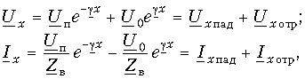
где
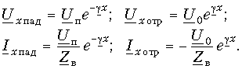
Напряжение и ток состоят из сумм двух слагаемых. Первые слагаемые уменьшаются с увеличением расстояния от начала линии х, вторые – возрастают. Создается впечатление о существовании в линии двух типов волн: падающей и отраженной. Чтобы убедиться в этом, рассмотрим мгновенные значения напряжения и тока.
Помня, что в (13.10) все величины в общем случае комплексные
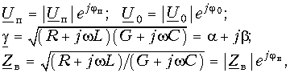
можно по известным правилам (см. § 3.2) перейти от (13.10) для комплексных значений к уравнениям передачи для мгновенных значений напряжений и токов. Для простоты положим jп = j0 = 0. Тогда
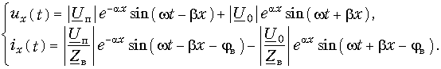
Проанализируем сначала первые слагаемые этих уравнений, которые обозначим
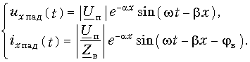
В каждом сечении линии (т. е. в каждой точке х) колебания напряжения и тока являются гармоническими. Амплитуда этих колебаний уменьшается по мере удаления от начала линии по закону е–aх. В каждой последующей точке линии колебания отстают по фазе от колебаний в предыдущей точке (на это указывает знак «минус» перед bх).
Если в момент времени t1 сделать фотографию распределения, например, напряжения uxпад вдоль линии, то она будет иметь вид кривой 1 (рис. 13.3). В следующий момент t2 фаза напряжения в каждой точке линии изменится на величину w(t2 – t1), и вся картина как бы сместится вдоль оси х вправо (кривая 2 на рис. 13.3). Аналогичная ситуация будет наблюдаться и в момент времени t3 > t2 (кривая 3 на рис. 13.3).
Если сделать последовательно ряд мгновенных фотографий и затем их проецировать на экран, то создается впечатление движущейся волны напряжения вдоль цепи. Фактически же вдоль цепи распространяется состояние равной фазы. Например, можно взять точку цепи х1, соответствующую максимуму напряжения в момент времени t1 (точка А на рис. 13.3) и определить скорость ее перемещения. Скорость распространения вдоль цепи состояния равной фазы называется фазовой скоростью распространения
В момент времени t1 в точке х1 имеется определенное фазовое состояние wt1 – bх1. Это же фазовое состояние будет наблюдаться в точке х2, но уже в момент времени t2 wt2 – bх2. Приравнивая их получаем wt1– bх1= wt2– bх2
Фазовую скорость распространения (км/с) найдем как отношение расстояния х2– х1, пройденного точкой A, ко времени t2 – t1
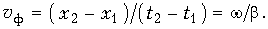
Таким образом, уравнения (13.12) описывают волны напряжения и тока, распространяющиеся от начала к концу линии. Такие волны называются падающими
Обратимся ко вторым слагаемым выражений (13.11), которые обозначим
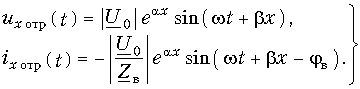
Эти слагаемые описывают волны точно такого же характера, как и падающие, но распространяющиеся в обратном направлении, т. е. от конца линии к началу. Эти волны называются отраженными волнами напряжения и тока. Амплитуды отраженных волн убывают от конца линии к началу, наибольшая амплитуда наблюдается в конце линии.
В соответствии с рассмотренной картиной можно сказать, что в установившемся режиме гармонических колебаний напряжение и ток в любой точке линии складываются из падающих и отраженных волн напряжения и тока, т. е. ux = uxпад + uxотр; ix = ixпад + + ixотр. Отраженные волны возникают в конце линии.
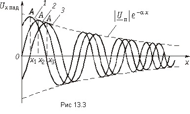
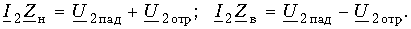
Складывая эти равенства и вычитая из первого второе, имеем:
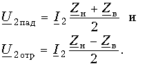
Отношение комплексной амплитуды отраженной волны к комплексной амплитуде падающей волны называется коэффициентом отражения по напряжению
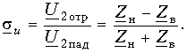
Отсюда
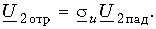
Коэффициент отражения по напряжению показывает, какую часть амплитуды падающей волны в конце линии составляет амплитуда отраженной волны. Амплитуда отраженной волны тока
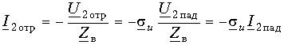
В то же время I2отр = siI2пад, где si – коэффициент отражения по току. Отсюда видно, что si = —su, т. е. коэффициент отражения по току равен по значению и противоположен по знаку коэффициенту отражения по напряжению.
Рассмотрим некоторые частные режимы работы линии. Если линия замкнута накоротко на конце (короткое замыкание (КЗ)), т. е. Zн = 0, то коэффициент su= —1, а коэффициент si= 1. Падающая и отраженная волны напряжения в конце линии имеют равные амплитуды и сдвинуты по отношению друг к другу на 180°. Амплитуда результирующей волны напряжения в конце линии будет равна нулю. В то же время падающая и отраженная волны тока будут иметь равные амплитуды, что приведет к увеличению тока в конце короткозамкнутой линии.
При холостом ходе (XX) в конце линии Zн = ¥ коэффициент su = 1 и si=—1, т. е. картина изменится на противоположную: ток в нагрузке будет равен нулю, а напряжение увеличится вдвое. Случай, когда Zн = Zв, рассмотрен ниже.
13.4. Вторичные параметры однородной линии
Волновое сопротивление. Одним из вторичных параметров однородной линии является волновое сопротивление линии, определяемое через первичные параметры формулой (13.7)
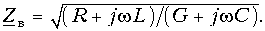
При w= 0
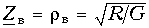
и jв = 0, т. е. волновое сопротивление чисто активное. Точно такой же характер имеет Zв при w=бесконечность;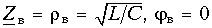
Для всех реально существующих цепей R/G > L/C, поэтому модуль волнового сопротивления с увеличением частоты уменьшается, стремясь к величине
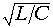
Угол jв изменяется от нулевого значения при w = 0 до нулевого значения при w=бесконечность;. Следовательно, на какой-то частоте он будет иметь максимум. Можно показать, что угол jв на всех частотах является отрицательным. На рис. 13.4 показаны графики частотных зависимостей модуля и угла волнового сопротивления однородной линии.Чтобы выяснить физический смысл волнового сопротивления, воспользуемся выражениями для комплексных амплитуд падающих волн напряжения и тока из (13.10):
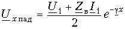
и
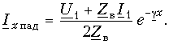
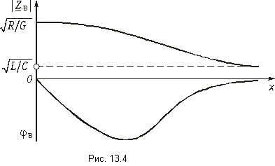
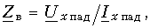
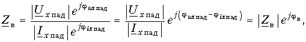
откуда
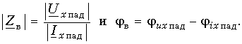
Аналогичным образом можно сказать, что
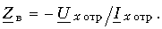
Волновое сопротивление не зависит от длины линии – оно постоянно в любой точке линии.Пример. Определим волновое сопротивление воздушной медной линии из проводов диаметром 2r = 4 мм и расстоянием между проводами lпр = 20 см и кабельной линии с бумажной изоляцией жил диаметром 2r = 0,5 мм на частотах f = 0; 0,8 и 10 кГц для воздушной цепи и f = 0 и 0,8 кГц для кабельной цепи.
Для воздушной линии первичные параметры, взятые из справочника: R = = 2,84 Ом/км; С = 6,3 нФ/км; L = l,93 мГн/км; G = 0,57×10 См/км.
При f = 0
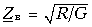
=2,38 кОм. При f = 800 Гц (w= 2p 800рад/с)
На частоте f = 10кГц wL R и wC G, поэтому = 548 Ом.
Для кабельной линии: R = 190 Ом/км, С = 50 нФ/км, L = 0,7 мГн/км,
G = 5×10–4 мкСм/км. На частоте f = 0  =
615 кОм. Для частоты f = 800 Гц справедливо соотношение R wL и wC
G. Следовательно,
=
615 кОм. Для частоты f = 800 Гц справедливо соотношение R wL и wC
G. Следовательно,
Ом.
Согласованное включение линии. Рассмотрим режим работы линии, когда Zн = Zв. В этом случае коэффициенты отражения su = si = 0 и отраженные волны напряжения и тока будут отсутствовать (Uxотр = 0 и Ixотр = 0).
Напряжение и ток в любой точке линии, в том числе и на входе (x = 0), будут определяться только падающими волнами. Согласно (13.14) , т. е. входное сопротивление такой линии равно ее волновому сопротивлению. Таким образом, волновое сопротивление линии является аналогом характеристического сопротивления симметричного четырехполюсника
Указанный режим работы линии является режимом согласованного включения. При этом вся энергия поглощается в конце линии нагрузочным сопротивлением. Этот режим работы наиболее выгоден для передачи сигналов связи, так как отражение энергии от нагрузки приводит помимо увеличения рабочего ослабления линии к появлению так называемых эхо-сигналов, накладывающихся на основной сигнал и искажающих его.
Уравнения передачи однородной линии в режиме согласованного включения могут быть легко получены из (13.9 б и в), если учесть, что при согласованном включении
а также что
Для любой точки линии (13.15 б)
Коэффициент распространения. Ко вторичным параметрам линии относится также коэффициент распространения, введенный в рассмотрение формулой (13.4):
В режиме согласованного включения линии из (13.15) имеем:
или
Отсюда
Для отрезка линии единичной длины (1 км, 1 м и т. д.) можно записать:
Вещественная часть коэффициента распространения a характеризует изменение напряжения и тока по абсолютной величине при распространении энергии на расстояние, равное единице длины линии. Она называется коэффициентом ослабления линии и измеряется в неперах, отнесенных к единице длины линии (в проводной связи – Нп/км, в радиосвязи – Нп/м). При использовании десятичного логарифма вместо натурального
измеряется в дБ/км или дБ/м.
Мнимая часть коэффициента распространения b характеризуется изменением напряжения и тока по фазе. Она называется коэффициентом фазы линии и измеряется в рад/км или рад/м. Вместо радиан могут использоваться градусы.
Процесс изменения напряжения (тока) вдоль согласованно нагруженной линии можно проиллюстрировать векторной диаграммой, показанной на рис. 13.5, а или так называемой спиральной диаграммой, приведенной на рис. 13.5, б
Численные значения коэффициентов a и b можно найти по первичным параметрам из общей формулы (13.4). Однако в ряде случаев можно получить более простые выражения. Так, на высоких частотах (для электрической цепи из меди, например, это частоты 10 кГц), где выполняются условия wL > R и wC > G пользуются упрощенными формулами:
Вывод этих формул дан в специальной литературе и здесь не приводится. Для кабельных цепей в области низких частот (например, от 0 до 800 Гц) выполняются соотношения R wL и wC G. В этом случае можно показать, что a = b =
. Вторичные параметры a и b зависят от частоты сложным образом. На рис. 13.6, а и б даны графики, качественно отражающие эту зависимость.
Пример. Определим коэффициент распространения воздушной медной линии c параметрами 2r = 4 мм и lпр = 20 см на частоте f = 800 Гц.
Значение коэффициента найдем по полной формуле (13.4), взяв первичные параметры из предыдущего примера:
Отсюда коэффициент ослабления a = 2,86×10–3 Нп/км = 2,86 мНп/км. Перевод непер в децибелы дает a (дБ) = a (Нп)´8,7 = 24,9×10–3 дБ/км. Коэффициент фазы b = 17,6×10–3 рад/км.
Постоянная передачи длинной линии. При распространении энергии по линии на расстояние l напряжение и ток уменьшаются в e^(al) раз, а фазы напряжения и тока изменятся на величину bl
Величина al описывает ослабление напряжения и тока при распространении энергии по всей длине линии и называется характеристической (собственной) постоянной ослабления линии: Ас = al
Из формул (13.15 а) следует, что
где S1 и S2 – полные мощности на входе и выходе линии. Поэтому
Величина Bс = al = ju1 – ju2 = ji1 – ji2 называется характеристической (собственной) постоянной фазы линии
По аналогии с теорией четырехполюсников величина Гс = Ас + jВс является характеристической (собственной) постоянной передачи линии
Заметим, что при отсутствии согласования, т. е. при Zн ¹ Zв условия передачи энергии по линии следует оценивать величиной рабочей постоянной передачи Гp = Аp + jВp по формулам, полученным в общей теории четырехполюсников (см. гл. 12).
13.5. Входное сопротивление линии
Входное сопротивление линии определяется отношением напряжения и тока в начале линии. Найдем выражение для Zвх, используя уравнения передачи линии в форме (13.9 в):
Рассмотрим некоторые частные режимы работы линии.
При согласованном включении линии (Zн = Zв) из (13.16) получим, что Zвх = Zв как и было установлено ранее.
Если выходные зажимы линии замкнуты накоротко (Zн = 0), формула (13.16) упрощается и принимает вид (13.17 а)
В случае разомкнутых выходных зажимов (Zн = бесконечность)
Когда линия нагружена на произвольное сопротивление, не равное волновому (Zн <> Zв), можно пользоваться для расчетов общей формулой (13.16). Однако иногда удобно выразить Zвх через параметры XX и КЗ. Для этого разделим числитель и знаменатель (13.16) на
Данная формула позволяет по измеренным значениям сопротивлений XX и КЗ рассчитать входное сопротивление линии.
Существует еще одна форма представления входного сопротивления. Для получения ее перепишем выражение (13.16) после деления на в другом виде:
Обозначим . Тогда
Эта формула дает возможность по заданным параметрам Zв и Zн определить
и затем найти входное сопротивление линии.
Во всех случаях, когда нагрузка на конце линии не равна ее волновому сопротивлению, входное сопротивление определяется гиперболическим тангенсом комплексного аргумента. Чтобы дать представление о характере изменения входного сопротивления линии, на рис. 13.7, а показаны зависимости модулей сопротивлений XX и КЗ от длины линии, построенные в соответствии с формулами (13.17), а на рис. 13.7, б изображена зависимость модуля Zвх от частоты из (13.18) при несогласованной нагрузке линии.
13.6. Линия без потерь
Вторичные параметры и уравнения передачи. Реальная линия всегда обладает потерями. Однако в ряде случаев удобно считать линию идеальной, т. е. не имеющей потерь. Линия без потерь – это линия, у которой рассеяние энергии отсутствует, что имеет место при значениях первичных параметров R = 0 и G =0.
Такая идеализация оправдана для коротких по длине линий, работающих
на сверхвысоких частотах (фидеров, элементов радиотехнических устройств, полосковых
линий, измерительных линий, согласующих СВЧ устройств и др.), где выполняются
условия R  wL и g wC
и поэтому резистивными сопротивлением проводов и проводимостью изоляции можно
пренебречь по сравнению с индуктивным сопротивлением и емкостной проводимостью
линии.
wL и g wC
и поэтому резистивными сопротивлением проводов и проводимостью изоляции можно
пренебречь по сравнению с индуктивным сопротивлением и емкостной проводимостью
линии.
Коэффициент распространения линии без потерь
Отсюда коэффициент ослабления a = 0, а коэффициент фазы b = w линейно зависит от частоты.
Волновое сопротивление линии без потерь
является чисто активным (резистивным).
Коэффициент фазы b связан с длиной волны электромагнитного колебания. Длиной волны l называется расстояние между двумя точками, взятыми в направлении распространения волны, фазы в которых отличаются на 2p. Следовательно, bl = 2p и l = 2p/b
Уравнения передачи линии без потерь получаются из (13.9 в), если учесть, что
При анализе процессов, происходящих в линии без потерь, общепринято расположение той или иной точки на линии характеризовать ее удалением не от начала линии, как это делали прежде, а от конца линии (рис. 13.8). В этом случае уравнения передачи линии без потерь, выражающие комплексные действующие значения напряжения и тока в произвольной точке линии х, отсчитанной от ее конца, записываются в виде:
Рассмотрим различные режимы работы линии без потерь.
Заменяя комплексные амплитуды их модулями и фазами, т. е. и и полагая для упрощения ju2 = = ji2 = 0, перейдем к уравнениям передачи для мгновенных значений напряжений и токов. Тогда
Эти уравнения описывают падающие волны, распространяющиеся в линии слева направо, т. е. от начала к концу линии (рис. 13.9, а). На направление распространения волн указывает знак «плюс» перед bx (напомним, что расстояние х отсчитывается от конца линии).
Таким образом, при согласованном включении линии без потерь в ней существуют только падающие, или бегущие, волны напряжения и тока. При этом амплитуды колебаний постоянны по всей длине линии (рис. 13.9, б). Данный режим работы линии называют также режимом бегущей волны. Сдвиг фаз между напряжением их и током ix равен нулю, поэтому энергия бегущей волны носит активный характер.
Короткое замыкание линии. При Zн = 0 напряжение в конце линии U2 = 0. Уравнения передачи (13.19) для данного режима работы линии принимают вид:
Если положить для простоты начальную фазу ji2 тока в конце линии равной нулю, то мгновенные значения напряжения и тока в любой точке линии описываются выражениями:
Амплитуды напряжения и тока являются функциями координаты х. В линии есть точки, в которых амплитуда напряжения (тока) в любой момент времени равна нулю. Это так называемые узлы напряжения (тока). Имеются также точки, в которых амплитуда напряжения (тока) приобретает максимальное значение – пучности напряжения (тока).
Узлы напряжения и пучности тока образуются в точках, в которых bx = 0, p, 2p, ..., так как при этом sin bx = 0 и ux = 0, a cos bx = ±1 и ток ix имеет максимальную амплитуду. Пучности напряжения и узлы тока возникают в тех точках линии, где
При этих значениях bх sin bх = ±1, в этом случае амплитуда напряжения ux оказывается максимальной, a cos bх = 0 и амплитуда тока ix равной нулю. Рассмотрим причины появления узлов и пуч-ностей напряжения и тока.
При КЗ линии коэффициенты отражения имеют значения
т. е. происходит полное отражение энергии, в результате чего в любой точке цепи результирующее напряжение (ток) оказывается равным сумме падающих и отраженных волн. Действительно, из уравнений в комплексной форме (13.20) следует:
Поскольку потерь в линии нет, амплитуды падающих и отраженных волн во всех точках линии одинаковы.
Сдвиг фаз между падающей и отраженной волнами напряжения в точке х
а между падающей и отраженной волнами тока
Удобно рассматривать в линии без потерь точки х, отстоящие от конца линии на расстояния, кратные четверти длины волны, т. е. кратные l/4. В конце линии (х = 0) ju = —p и ji = 0. Следовательно, падающая и отраженная волны напряжения находятся в противофазе, а падающая и отраженная волны тока – в фазе. Поэтому в конце линии наблюдается узел напряжения и пучность тока.
В промежуточных точках между узлами и пучностями фазовые соотношения отличны от 0, p 2p и т. д. В них амплитуды напряжения и тока принимают промежуточные значения между нулем и максимальным значением.
Векторная диаграмма, приведенная на рис. 13.10, иллюстрирует соотношение фаз между падающей и отраженной волнами тока в различных точках КЗ линии.
Распределение модулей комплексных амплитуд напряжения |Ux| и тока |Ix| по длине линии представлено на рис. 13.11. Расстояние между соседними узлами (пучностями) равно l/2.
Таким образом, в КЗ линии возникают волны напряжения и тока, которые не распространяются вдоль линии, находятся на одном месте. Такие волны называются стоячими а уравнения передачи (13.20) и (13.21) – уравнениями стоячих волн. Описываемый режим работы линии получил также название режима стоячих волн
Определим входное сопротивление КЗ линии в произвольной точке х. Из (13.20) следует, что
При x = 0, l/2, l, 3l/2, ... величина
и входное сопротивление = 0. При х
= l/4, 3l/4, 5l/4, ... величина
и входное сопротивление  = = ±j¥
= = ±j¥
На рис. 13.13 приведена зависимость от длины линии (расстояния х от конца линии).
Меняя длину КЗ линии без потерь, можем получить входное сопротивление, имеющее индуктивный характер (в диапазоне x = = 0 ... l/4), емкостный характер (х = l/4 ... l/2), затем опять индуктивный (х = l/2 ... 3l/4) и т. д.
При длинах, кратных l/4, входное сопротивление короткозамкнутой линии без потерь эквивалентно входному сопротивлению параллельного колебательного контура, а при длинах, кратных l/2 – входному сопротивлению последовательного колебательного контура.
Учитывая, что в линиях, без потерь
и, следовательно, частота w и длина линии l (или расстояние от конца линии
х) входят в выражение  симметричным образом,
приходим к выводу, что частотная зависимость
симметричным образом,
приходим к выводу, что частотная зависимость  аналогична зависимости от длины линии (рис. 13.14). На тех частотах, где bl
кратно p/2,
, а где bl кратно p,
аналогична зависимости от длины линии (рис. 13.14). На тех частотах, где bl
кратно p/2,
, а где bl кратно p,  = 0. При фиксированной
длине КЗ линия представляет собой двухполюсник с бесконечным числом резонансов.
= 0. При фиксированной
длине КЗ линия представляет собой двухполюсник с бесконечным числом резонансов.
Размыкание линии. В режиме XX Zн = ¥ и I2 = 0. Уравнения передачи получим из (13.19):
Для мгновенных значений имеем (при начальной фазе напряжения ju2 = 0):
Сравнивая уравнения передачи (13.22) и (13.23) с уравнениями КЗ линии (13.20) и (13.21), видим, что полученные уравнения также являются уравнениями стоячих волн. Разница состоит в том, что узлы и пучности напряжения при XX совпадают с узлами и пучностями тока при коротком замыкании, а узлы и пучности тока разомкнутой линии – с узлами и пучностями напряжения КЗ линии. В конце разомкнутой линии образуется пучность напряжения и узел тока.
Данный режим работы линии по аналогии с предыдущим называется режимом стоячих волн. Входное сопротивление разомкнутой линии без потерь определяется из (13.22):
Его график, отражающий зависимость от х, дан на рис. 13.15.
Включение линии на реактивное сопротивление. Пусть линия нагружена на индуктивность Lн (рис. 13.16, а). При заданной частоте w сопротивление нагрузки Zн = jwLн
Из рис. 13.13 видно, что отрезок закороченной линии длиной меньше l/4 имеет входное сопротивление индуктивного характера. Поэтому всегда можно подобрать такую длину отрезка l¢, при которой его входное сопротивление равнялось бы заданному сопротивлению Zн. Заменим индуктивность Lн отрезком КЗ линии (рис. 13,16, б). Эта замена позволяет применить теорию КЗ линии и сразу же построить кривые распределения напряжения и тока в линии, нагруженной на индуктивность (рис. 13.16, в). В рассматриваемой линии возникают стоячие волны. Этот режим отличается от режима КЗ замыкания тем, что ближайший узел и пучность сдвинуты от конца линии на некоторое расстояние.
В случае, когда линия нагружена на емкость Cн с сопротивлением Zн = = 1/(jwCн), можно заменить эту емкость отрезком разомкнутой линии длиной l < l/4 (см. рис. 13.15), входное сопротивление которого равняется заданному 1/(jwCн). Очевидно, и в этом случае в линии возникают стоячие волны. Предоставляем читателю возможность проанализировать данный режим работы линии самостоятельно.
Включение линии на резистивное сопротивление, не равное волновому. Положим для определенности, что сопротивление нагрузки Rн > Zв = rв, и рассмотрим распространение по линии волны напряжения.
Падающая волна не вся поглощается нагрузкой, часть ее отражается обратно в линию. Амплитуда отраженной волны меньше амплитуды падающей волны, поэтому падающую волну можно представить в виде суммы двух волн. Одна из них, равная по амплитуде отраженной волне, взаимодействуя с ней, образует стоячую волну. Отставшаяся падающая волна является бегущей. Таким образом, в линии возникает смешанная волна, состоящая из бегущей и падающей волн. Данный режим работы называется режимом смешанных волн
На рис. 13.17 показано распределение по длине линии модуля комплексной амплитуды напряжения. В линии будут отсутствовать узлы и пучности, а будут наблюдаться минимумы и максимумы амплитуды волн.
Чтобы оценить близость данного режима к режиму бегущей волны, вводят коэффициент бегущей волны
Величина kбв изменяется в пределах от 0 <= kбв <= 1. При kбв = 0 в линии имеет место стоячая волна, при kбв = 1 – бегущая волна.
Коэффициент бегущей волны можно выразить через отношение волнового сопротивления и сопротивления нагрузки. Действительно, минимальное значение амплитуды смешанной волны представляет собой амплитуду бегущей волны , т. е. той волны, которая поглощается частью сопротивления нагрузки, равной волновому сопротивлению. Поэтому
Максимальное значение амплитуды смешанной волны
где |Ucв| – максимальная амплитуда стоячей волны. Отсюда находим
Часто используют обратную величину kcв = 1/kбв которую называют коэффициентом стоячей волны
Из общих уравнений передачи линии без потерь (13.19) рассмотрим сначала уравнение для напряжения:
Воспользуемся подстановкой в виде тождества
Тогда после несложных преобразований получим
Уравнение передачи для мгновенных значений напряжения находим как обычно (полагая при этом ju2 = 0):
Первое слагаемое этого уравнения является бегущей волной, второе слагаемое – стоячей волной. При kбв = 0 первое слагаемое обращается в нуль и в уравнении присутствует только стоячая волна. При kбв = 1 обращается в нуль второе слагаемое и уравнение содержит только бегущую волну.
Рассматривая аналогичным образом уравнение для тока ix(t), имеем:
Можно сделать некоторые выводы:
если переносимая вдоль линии энергия полностью рассеивается на ее конце (линия нагружена на резистивное сопротивление, равное волновому), то отражение энергии отсутствует и в линии существуют только бегущие волны;
если энергия в конце линии не рассеивается (короткое замыкание, холостой ход, реактивная нагрузка), то происходит полное отражение волн, и, как следствие этого, в линии образуются только стоячие волны;
когда переносимая вдоль линии энергия лишь частично рассеивается на ее конце (линия замкнута на резистивное сопротивление, не равное волновому), в линии одновременно присутствуют как бегущие, так и стоячие волны.
13.7. Применение отрезков линий с пренебрежимо малыми потерями
Колебательный контур. В технике сверхвысоких частот вместо колебательных контуров на сосредоточенных реактивных элементах используют отрезки короткозамкнутых или разомкнутых линий с малыми потерями. Частотные характеристики входных сопротивлений таких отрезков (см. рис. 13.14) в области частот, прилегающих к резонансной, достаточно хорошо воспроизводят характеристики колебательных контуров. Значения добротностей отрезков линий достаточно велики и могут достигать, например, для короткозамкнутых четвертьволновых отрезков нескольких тысяч единиц. Это позволяет успешно использовать их для селекции колебаний весьма высоких частот.
Линейный вольтметр. Непосредственное включение в цепь обычного измерительного прибора при очень высокой частоте нарушает режим работы цепи, так как вносит в нее добавочное реактивное и резистивное сопротивления. Измерительный прибор с малым входным сопротивлением, включенный через четвертьволновый отрезок линии, называют линейным вольтметром (рис. 13.19). Подключение измерительного прибора к отрезку линии практически создает КЗ. Входное сопротивление линейного вольтметра оказывается очень большим, и он не оказывает заметного влияния на цепь, в которой измеряется напряжение. Измеряемое действующее значение напряжения связано с действующим значением тока, протекающего через измерительный прибор, зависимостью U = rвI, что следует из уравнения (13.20) при х = l/4.
Полосовой фильтр. На сверхвысоких частотах, где потери в линии пренебрежимо малы, КЗ отрезки линии могут быть использованы для построения фильтров. В качестве примера на рис. 13.20, а показана схема полосового фильтра, построенного на двух КЗ отрезках линии. В продольное плечо схемы включен полуволновый отрезок, в поперечное плечо – четвертьволновый. Первый отрезок имеет входное сопротивление, аналогичное входному сопротивлению последовательного колебательного контура. Второй, четвертьволновый, отрезок играет роль параллельного колебательного контура. Эквивалентная электрическая схема фильтра дана на рис. 13.20, б
Четвертьволновой трансформатор сопротивлений. При длине отрезка х = l/4 уравнения передачи (13.19) упрощаются и принимают вид:
Такой отрезок можно использовать в качестве согласующего трансформатора сопротивлений. Если включаемые каскадно линии имеют разные волновые сопротивления Zв1 и Zв2, то у четвертьволнового согласующего трансформатора в качестве сопротивления нагрузки выступает волновое сопротивление Zв2. Входное сопротивление согласующего трансформатора должно быть равно Zв1. Для выполнения этого условия достаточно выбрать Zв трансформатора равным Тогда
Такой согласующий трансформатор приведен на рис. 13.21.
Пример. На входе отрезка линии без потерь длиной l/2, нагруженного на резистивное сопротивление Rн = 37,5 Ом, включен источник с Uг = 10 В. Волновое сопротивление отрезка Zв = rв = 75 Ом. На расстоянии l/4 от конца отрезка к нему подключен короткозамкнутый шлейф длиной lш = l/8 и волновым сопротивлением Zв = rв = 75 Ом. Определим входное сопротивление отрезка и ток на его входе.
Отрезок линии с короткозамкнутым шлейфом изображен на рис. 13.22. Найдем сначала входное сопротивление части отрезка длиной l/4 от сопротивления Rн до точек а—б, рассматривая эту часть как трансформатор сопротивления: = 150 Ом.
Входное сопротивление КЗ шлейфа длиной l/8, определяется по формуле где
Таким образом, левая часть отрезка длиной l/4 оказалась нагруженной на параллельное соединение сопротивлений и т. е. на сопротивление
Входное сопротивление всего отрезка определим, рассматривая первую половину отрезка как трансформатор сопротивления. Поэтому Ток на входе отрезка линии
Вопросы и задания для самопроверки
1. Привести примеры применения длинных линий.
2. Как рассчитывается длина волны, излучаемой радиовещательной станцией?
3. Рассчитать и построить графики первичных параметров коаксиального кабеля 2,6/9,4 мм в диапазоне частот 812 ... 17569 кГц. При расчетах принять e = 1,1; tg d = 0,6×10–4, длина кабеля l = 1 км.
Ответ: L = 2,57×10–4 Гн/км, С = 47,5 нФ/км,
R = 4,1×10–2 Ом/км, G = 1,8×10–14 См/км.
4. Используя данные задачи 3, рассчитать волновое сопротивление кабеля , длину волны l
Ответ: Zв = 73,5 Ом, l = 0,286×109/f
5. Первичные параметры линии на частоте w = 104 с–1 имеют значения: R = 10 Ом/км, L = 0,5 мГн/км, С = 4×10–8 Ф/км, G = = 10–6 См/км. Рассчитать волновое сопротивление, коэффициент распространения и длину волны.
Ответ: Zв = 167,2 Ом, jв = –0,552 рад, a = 0,0157, b = –0,065 (для l = 1 км).
6. Почему кабельные линии связи работают в режиме согласованной нагрузки? Что произойдет, если волновое сопротивление антенного фидера не будет согласовано с входным сопротивлением телевизионного приемника?
7. Запишите уравнения передачи линии без потерь. Чем они отличаются от уравнений передачи линии с потерями?
8. Чем отличаются напряжения и токи в различных сечениях согласованно нагруженной линии без потерь?
9. Укажите различия между следующими понятиями: падающие и отраженные волны; бегущие, стоячие и смешанные волны.
10. Линия без потерь с волновым сопротивлением r = 90 Ом нагружена на сопротивление Rн. Коэффициент бегущей волны равен 0,6. Определить сопротивление нагрузки Rн
Ответ: 5,4 Ом.
11.Какой минимальной длины необходимо взять отрезок линии без потерь с параметрами L = 0,49 мкГн, С = 25 мФ/м, чтобы на частоте f = 108 Гц получить из него индуктивность 0,223 мкГн.
Ответ: короткозамкнутый отрезок длиной 0,347 м.
*При анализе работы длинной линии под U и I в дальнейшем будем
понимать их комплексные амплитуды (без введения индекса: Um и Im).